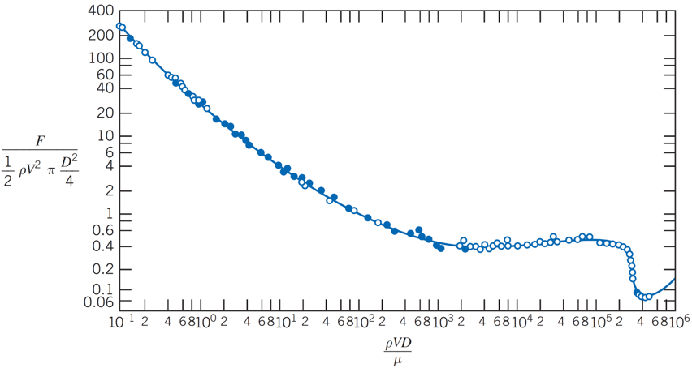
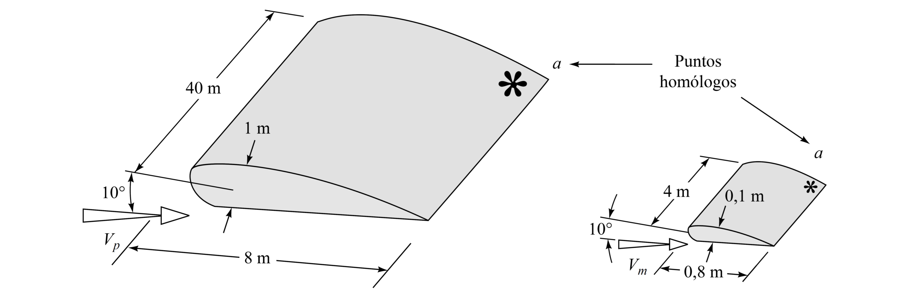
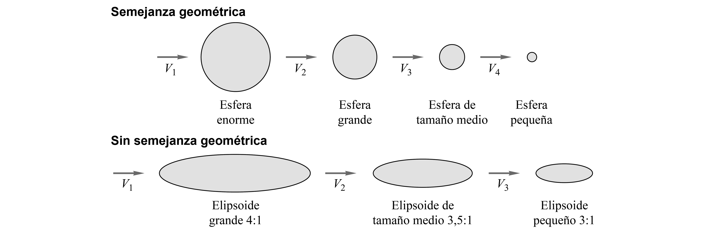
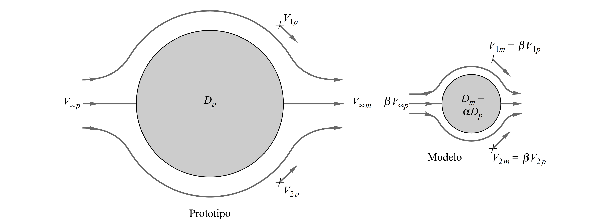
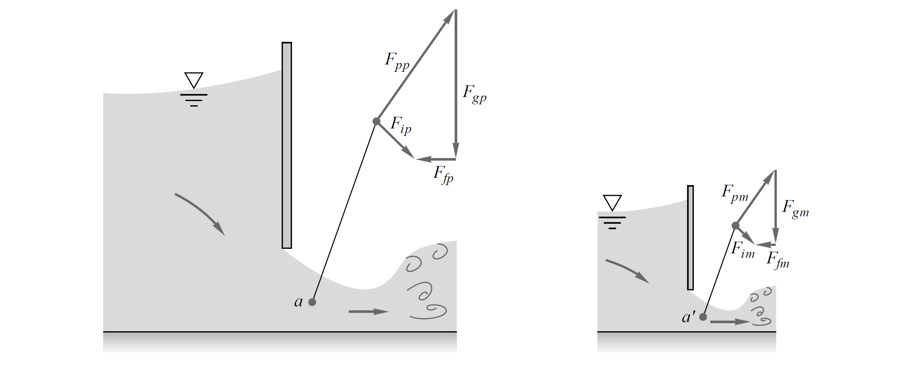

6. Análisis dimensional y semejanza#
6.1. Introducción#
En mecánica de fluidos rara vez podemos ensayar directamente el prototipo final. Un avión, un aliviadero, una tubería o una bomba suelen estudiarse primero mediante modelos, correlaciones o datos de laboratorio. El análisis dimensional entrega el lenguaje para conectar esos ensayos con el sistema real.
Consideremos que la fuerza de arrastre sobre una esfera de diámetro \(D\).
{kind=link}
Mediante un análisis fenomenológico, se puede demostrar que esta fuerza depende de la densidad del fluido, la viscosidad, la velocidad y una longitud característica:
Debido a la gran cantidad de parámetros, si quisieramos elavorar un estudio variando cada uno por separado, el análisis del problema se vuelve costoso y dificil de interpretar.
La idea del análisis dimensional es reorganizar el fenómeno para encontrar una descripción más compacta y útil. Para ello, se identifican las variables relevantes y se agrupan en términos adimensionales, lo que permite simplificar el problema y revelar relaciones fundamentales entre ellas.
Por ejemplo, en el caso de la fuerza de arrastre, podemos demostrar que los cuátro parámetros pueden agruparse en una función de la forma:
{kind=link}

Nota. El factor 1/2 \(\pi\) en el denominador del eje \(y\) no afecta la dimensionalidad de la formulación
6.2. Dimensiones y unidades#
Una unidad es una convención de medida, como \(\mathrm{m}\), \(\mathrm{s}\) o \(\mathrm{kg}\). Una dimensión expresa la naturaleza física de una variable, como longitud \(L\), masa \(M\) o tiempo \(T\).
El análisis dimensional trabaja con dimensiones, no con unidades particulares.
Por ejemplo:
Dos ecuaciones pueden estar escritas en unidades distintas y seguir representando la misma física, siempre que conserven la misma estructura dimensional.
Cantidad |
Símbolo |
\(\mathrm{MLT}\Theta\) |
\(\mathrm{FLT}\Theta\) |
|---|---|---|---|
Longitud |
\(L\) |
\(L\) |
\(L\) |
Área |
\(A\) |
\(L^2\) |
\(L^2\) |
Volumen |
\(\forall\) |
\(L^3\) |
\(L^3\) |
Velocidad |
\(V\) |
\(LT^{-1}\) |
\(LT^{-1}\) |
Aceleración |
\(\mathrm{d}V/\mathrm{d}t\) |
\(LT^{-2}\) |
\(LT^{-2}\) |
Velocidad del sonido |
\(a\) |
\(LT^{-1}\) |
\(LT^{-1}\) |
Flujo volumétrico o caudal |
\(Q\) |
\(L^3T^{-1}\) |
\(L^3T^{-1}\) |
Flujo másico |
\(\dot{m}\) |
\(MT^{-1}\) |
\(FTL^{-1}\) |
Presión o esfuerzo |
\(p\), \(\sigma\), \(\tau\) |
\(ML^{-1}T^{-2}\) |
\(FL^{-2}\) |
Velocidad de deformación |
\(\dot{\varepsilon}\) |
\(T^{-1}\) |
\(T^{-1}\) |
Ángulo |
\(\theta\) |
adimensional |
adimensional |
Velocidad angular |
\(\omega\), \(\Omega\) |
\(T^{-1}\) |
\(T^{-1}\) |
Viscosidad dinámica |
\(\mu\) |
\(ML^{-1}T^{-1}\) |
\(FTL^{-2}\) |
Viscosidad cinemática |
\(\nu\) |
\(L^2T^{-1}\) |
\(L^2T^{-1}\) |
Tensión superficial |
\(\sigma\) |
\(MT^{-2}\) |
\(FL^{-1}\) |
Fuerza |
\(F\) |
\(MLT^{-2}\) |
\(F\) |
Momento o par |
\(M\) |
\(ML^2T^{-2}\) |
\(FL\) |
Potencia |
\(P\) |
\(ML^2T^{-3}\) |
\(FLT^{-1}\) |
Trabajo o energía |
\(W\), \(E\) |
\(ML^2T^{-2}\) |
\(FL\) |
Densidad |
\(\rho\) |
\(ML^{-3}\) |
\(FT^2L^{-4}\) |
Temperatura |
\(T\) |
\(\Theta\) |
\(\Theta\) |
Calor específico |
\(c_p\) |
\(L^2T^{-2}\Theta^{-1}\) |
\(L^2T^{-2}\Theta^{-1}\) |
Peso específico |
\(\gamma\) |
\(ML^{-2}T^{-2}\) |
\(FL^{-3}\) |
Conductividad térmica |
\(k\) |
\(MLT^{-3}\Theta^{-1}\) |
\(FT^{-1}\Theta^{-1}\) |
Coeficiente de expansión térmica |
\(\beta\) |
\(\Theta^{-1}\) |
\(\Theta^{-1}\) |
6.3. Homogeneidad dimensional#
El principio de homogeneidad dimensional establece que una ecuación físicamente válida debe tener la misma dimensión en todos sus términos aditivos.
Dicho de otra forma: no se pueden sumar magnitudes de distinta naturaleza física.
Por ejemplo,
es homogénea porque todos los términos tienen dimensión de longitud.
6.4. De variables dimensionales a relaciones adimensionales#
Cuando una relación es homogénea, muchas veces puede reescribirse en forma adimensional, como en el caso de la fuerza de arrastre:
Ahora el fenómeno queda descrito con dos cantidades adimensionales en vez de cuatro variables dimensionales independientes.
6.5. Teorema de Buckingham Pi#
Si un fenómeno depende de \(n\) variables dimensionales y esas variables involucran \(r\) dimensiones fundamentales independientes, entonces la relación física puede expresarse mediante \(n-r\) grupos adimensionales independientes.
Ese resultado no reemplaza el juicio físico: primero hay que identificar correctamente qué variables son relevantes.
6.6. Procedimiento práctico#
Una ruta de trabajo razonable es la siguiente:
Listar las variables que intervienen en el problema.
Elegir la variable de salida que interesa predecir.
Escribir las dimensiones de cada variable.
Seleccionar variables repetitivas que cubran las dimensiones fundamentales.
Formar grupos adimensionales y reconocer los que tienen significado físico conocido.
6.7. Cómo elegir variables repetitivas#
Las variables repetitivas deben cumplir tres criterios:
En conjunto deben contener todas las dimensiones fundamentales del problema.
No deben formar por sí solas un grupo adimensional.
No conviene incluir entre ellas la variable de salida que se quiere correlacionar.
Además, es preferible que representen geometría, cinemática y propiedades del fluido de una forma físicamente clara.
Errores típicos al construir grupos adimensionales:
olvidar una variable físicamente importante, como \(g\), \(\sigma\), \(a\) o la rugosidad;
confundir viscosidad dinámica con viscosidad cinemática;
elegir variables repetitivas que no cubren \(M\), \(L\) y \(T\);
usar Buckingham Pi como receta algebraica sin pensar en el régimen de flujo.
6.8. Microejemplo 1: fuerza de arrastre#
Para un cuerpo de forma fija en un flujo incompresible, sin superficie libre y a baja velocidad, planteamos:
Aquí hay \(n=5\) variables si contamos a \(F\), y aparecen \(r=3\) dimensiones fundamentales. Por lo tanto, esperamos \(5-3=2\) grupos adimensionales.
Si elegimos \(\rho\), \(V\) y \(D\) como variables repetitivas, una forma conveniente es:
Entonces la relación puede escribirse como
donde \(C_D\) es un coeficiente de arrastre.
6.9. Microejemplo 2: caída de presión en tubería#
Para una tubería recta de diámetro \(D\), longitud \(L\) y rugosidad \(\varepsilon\), una formulación general es:
La estructura del problema ya sugiere que no basta con la viscosidad: la geometría también importa.
Una forma adimensional útil es
Esto anticipa por qué en flujo interno las pérdidas no dependen solo de \(\mathrm{Re}\), sino también de la escala geométrica y de la rugosidad relativa.
6.10. Definición de números adimensionales característicos#
Un número adimensional no es solo una abreviatura algebraica. En general expresa la competencia entre efectos físicos.
Interpretarlo bien es más importante que memorizar su fórmula.
6.10.1. Número de Reynolds: inercia frente a viscosidad#
Compara efectos de inercia con efectos viscosos.
Si \(\mathrm{Re}\) es pequeño, la viscosidad domina y amortigua el movimiento.
Si \(\mathrm{Re}\) es grande, la inercia domina en gran parte del flujo, aunque la viscosidad sigue siendo importante cerca de paredes y capas de corte.
En mecánica de fluidos, \(\mathrm{Re}\) casi siempre merece atención.
6.10.2. Número de Froude: inercia frente a gravedad#
Compara inercia con gravedad.
Es el parámetro dominante en flujos con superficie libre, como canales, vertederos, aliviaderos, oleaje y resistencia de buques. Si el comportamiento está gobernado por ondas gravitacionales, igualar \(\mathrm{Fr}\) suele ser prioritario.
6.10.3. Números de Euler y Mach: presión y compresibilidad#
El número de Euler (\(\mathrm{Eu}\)) mide la relevancia de diferencias de presión frente a la inercia. El número de Mach (\(\mathrm{Ma}\)) compara la velocidad del flujo con la velocidad del sonido y marca cuándo la compresibilidad deja de ser despreciable.
Como regla práctica, cuando \(\mathrm{Ma} \gtrsim 0.3\), ya conviene vigilar efectos compresibles.
6.10.4. Número de Weber y rugosidad relativa: tensión superficial y pared#
El número de Weber compara inercia con tensión superficial.
Es importante cuando la curvatura de la superficie libre o de la interfase es relevante, como en gotas, chorros, capilaridad o modelos hidráulicos muy pequeños.
Otro parámetro útil es la rugosidad relativa, \(\varepsilon/D\), especialmente en flujo turbulento interno.
La siguiente tabla resume algunos de los grupos adimensionales más comunes:
Parámetro |
Definición |
Efectos |
Importancia típica |
|---|---|---|---|
Número de Reynolds |
\(\mathrm{Re}=\frac{\rho U L}{\mu}\) |
\(\mathrm{\frac{Inercia}{Viscosidad}}\) |
siempre |
Número de Mach |
\(\mathrm{Ma}=U/a\) |
\(\mathrm{\frac{Velocidad~del~flujo}{Velocidad~del~sonido}}\) |
flujo compresible |
Número de Froude |
\(\mathrm{Fr}=\frac{U}{\sqrt{gL}}\) |
\(\mathrm{\frac{Inercia}{Gravedad}}\) |
flujos con superficie libre |
Número de Weber |
\(\mathrm{We}=\frac{\rho U^2 L}{\sigma}\) |
\(\mathrm{\frac{Inercia}{Tensión~superficial}}\) |
flujos con superficie libre |
Número de Euler |
\(\mathrm{Eu}=\frac{\Delta p}{\rho U^2}\) |
\(\mathrm{\frac{Presión}{Inercia}}\) |
cavitación y efectos de presión |
Coeficiente de presión |
\(C_p=\frac{\Delta p}{\tfrac{1}{2}\rho U^2}\) |
\(\mathrm{\frac{Presión~estática}{Presión~dinámica}}\) |
aerodinámica e hidrodinámica |
Coeficiente de sustentación |
\(C_L=\frac{L}{\tfrac{1}{2}\rho U^2 A}\) |
\(\mathrm{\frac{Fuerza~de~sustentación}{Fuerza~dinámica}}\) |
aerodinámica e hidrodinámica |
Coeficiente de resistencia |
\(C_D=\frac{D}{\tfrac{1}{2}\rho U^2 A}\) |
\(\mathrm{\frac{Arrastre}{Fuerza~dinámica}}\) |
aerodinámica e hidrodinámica |
Factor de fricción |
\(f=\frac{h_f}{\left(\frac{L}{D}\right)\frac{V^2}{2g}}\) |
\(\mathrm{\frac{Pérdida~de~carga~por~fricción}{(L/D)\times Altura~dinámica}}\) |
flujo de tuberías (\(D\) diámetro de tubería y \(L\) longitud) |
Coeficiente de fricción superficial |
\(C_f=\frac{\tau_w}{\tfrac{1}{2}\rho V^2}\) |
\(\mathrm{\frac{Esfuerzo~cortante~en~la~pared}{Presión~dinámica}}\) |
capa límite |
Rugosidad relativa |
\(\varepsilon/L\) |
\(\mathrm{\frac{Rugosidad~de~la~pared}{Longitud~del~cuerpo}}\) |
flujo turbulento con pared rugosa |
Parámetro |
Definición |
Efectos |
Importancia típica |
|---|---|---|---|
Número de Prandtl |
\(\mathrm{Pr}=\frac{\mu c_p}{k}\) |
\(\mathrm{\frac{Difusión~de~cantidad~de~movimiento}{Difusión~térmica}}\) |
convección de calor |
Número de Eckert |
\(\mathrm{Ec}=\frac{U^2}{c_p\Delta T}\) |
\(\mathrm{\frac{Energía~cinética}{Entalpía}}\) |
disipación |
Número de Grashof |
\(\mathrm{Gr}=\frac{g\beta\Delta T L^3}{\nu^2}\) |
\(\mathrm{\frac{Flotabilidad}{Viscosidad}}\) |
convección natural |
Número de Rayleigh |
\(\mathrm{Ra}=\mathrm{Gr}\,\mathrm{Pr}\) |
\(\mathrm{\frac{Flotabilidad}{Difusión~viscosa~y~térmica}}\) |
convección natural |
Relación de temperaturas |
\(T_w/T_{\infty}\) |
\(\mathrm{\frac{Temperatura~en~la~pared}{Temperatura~de~la~corriente}}\) |
transporte de calor |
Parámetro |
Definición |
Efectos |
Importancia típica |
|---|---|---|---|
Relación de calores específicos |
\(k=\frac{c_p}{c_v}\) |
\(\mathrm{\frac{Entalpía}{Energía~interna}}\) |
flujo compresible |
Número de Rossby |
\(\mathrm{Ro}=\frac{U}{\Omega L}\) |
\(\mathrm{\frac{Velocidad~del~flujo}{Efecto~Coriolis}}\) |
flujos geofísicos |
Número de Strouhal |
\(\mathrm{St}=\frac{\omega L}{U}\) |
\(\mathrm{\frac{Oscilación}{Velocidad~media}}\) |
flujos oscilatorios |
6.11. Adimensionalización de las ecuaciones básicas#
En lugar de construir grupos adimensionales problema por problema, también podemos partir directamente de las ecuaciones básicas del movimiento.
La idea es elegir escalas de referencia para longitud, velocidad, tiempo y presión, y luego reescribir las ecuaciones en forma adimensional.
Esta estrategia no resuelve el flujo por sí sola, pero sí muestra con claridad qué parámetros gobiernan la física y en qué términos aparecen.
6.11.1. Escalas de referencia y variables adimensionales#
Para un flujo incompresible con viscosidad constante, una elección natural es usar una longitud característica \(L\) y una velocidad característica \(U\).
Con esas escalas, podemos definir:
La forma de \(p^*\) incorpora el efecto gravitatorio de manera consistente con la interpretación energética del flujo.
6.11.2. Continuidad y cantidad de movimiento en forma adimensional#
Al sustituir estas variables en continuidad y Navier-Stokes, las ecuaciones toman una forma mucho más informativa:
Aquí aparece de inmediato el papel del número de Reynolds: el término viscoso queda ponderado por \(1/\mathrm{Re}\) frente a la inercia.
Eso explica por qué \(\mathrm{Re}\) organiza tantos regímenes de flujo, incluso antes de resolver las ecuaciones.
6.11.3. Parámetros que emergen desde las ecuaciones y las condiciones de contorno#
La continuidad no introduce parámetros nuevos, pero la ecuación de cantidad de movimiento y sus condiciones de contorno sí lo hacen.
En flujos sin superficie libre, el parámetro dominante suele ser \(\mathrm{Re}\).
Si existe superficie libre, aparecen además \(\mathrm{Fr}\), \(\mathrm{Eu}\) y, cuando la tensión superficial importa, también \(\mathrm{We}\).
En gases a velocidades altas, la compresibilidad introduce \(\mathrm{Ma}\) y la relación de calores específicos \(k\).
El punto clave es este: muchos números adimensionales importantes no se eligen de forma arbitraria. Surgen directamente de la forma no dimensional de las ecuaciones básicas.
6.12. Criterios de semejanza según el tipo de flujo#
Flujo externo incompresible y sin superficie libre: típicamente domina \(\mathrm{Re}\).
Flujo con superficie libre: suele dominar \(\mathrm{Fr}\); \(\mathrm{Re}\) y, a veces, \(\mathrm{We}\) también pueden importar.
Flujo compresible: suelen importar \(\mathrm{Ma}\) y \(\mathrm{Re}\).
Flujo interno en tuberías: aparecen \(\mathrm{Re}\), \(\varepsilon/D\) y con frecuencia \(L/D\).
La física decide qué grupos son relevantes; el método solo los organiza.
6.13. Del análisis dimensional a la semejanza#
El objetivo de un modelo no es solo entregar resultados. El objetivo es que esos resultados representen al prototipo mediante una ley de escala bien fundamentada.
Habrá semejanza útil cuando los grupos adimensionales relevantes del modelo y del prototipo alcancen los mismos valores.
6.13.1. Semejanza geométrica#
Existe semejanza geométrica si todas las longitudes homólogas conservan la misma razón de escala:
Eso incluye forma, ángulos, posiciones relativas y detalles geométricos que afecten el flujo.
Sin semejanza geométrica, cualquier comparación posterior queda debilitada desde el inicio.
{kind=link}

{kind=link}

6.13.2. Semejanza cinemática#
Existe semejanza cinemática cuando, además de la geometría, los campos de velocidad y las trayectorias homólogas mantienen una escala temporal consistente.
Si los efectos de viscosidad, tensión superficial o de compresibilidad son importantes, la semejanza cinemática está condicionada a que haya semejanza dinámica.
{kind=link}

6.13.3. Semejanza dinámica#
Existe semejanza dinámica cuando las razones entre fuerzas correspondientes son equivalentes en modelo y prototipo.
En la práctica, esto se logra igualando los grupos adimensionales relevantes:
flujo incompresible sin superficie libre: \(\mathrm{Re}_m = \mathrm{Re}_p\);
flujo con superficie libre: \(\mathrm{Fr}_m = \mathrm{Fr}_p\) y, si es posible, también \(\mathrm{Re}\) y quizá \(\mathrm{We}\);
flujo compresible: \(\mathrm{Ma}_m = \mathrm{Ma}_p\) y \(\mathrm{Re}_m = \mathrm{Re}_p\).
{kind=link}

6.14. Modelos, prototipos y leyes de escala#
Si modelo y prototipo tienen el mismo coeficiente de arrastre, entonces:
Si el fenómeno está dominado por gravedad y se impone igualdad de Froude, entonces:
La ley de escala correcta depende del mecanismo físico dominante, no del instrumento de ensayo.
6.15. Limitaciones prácticas de la semejanza completa#
La semejanza completa suele ser más un ideal que una rutina de laboratorio.
En modelos hidráulicos con superficie libre, igualar simultáneamente \(\mathrm{Fr}\) y \(\mathrm{Re}\) con el mismo fluido casi nunca es posible cuando cambia la escala.
En túneles de viento, igualar a la vez \(\mathrm{Ma}\) y \(\mathrm{Re}\) puede exigir cambios de presión, temperatura o incluso de gas de ensayo.
La tensión superficial, la rugosidad, los soportes y las tolerancias geométricas introducen discrepancias adicionales.
6.16. ¿Qué hace entonces el ingeniero?#
Cuando la semejanza completa no es viable, la estrategia no es abandonar el problema, sino priorizar los efectos dominantes:
igualar el o los parámetros dominantes;
asegurar que los parámetros secundarios sean despreciables o corregibles;
declarar explícitamente qué similitudes se cumplen y cuáles no;
evitar extrapolaciones fuera del rango donde la física y los datos siguen siendo confiables.